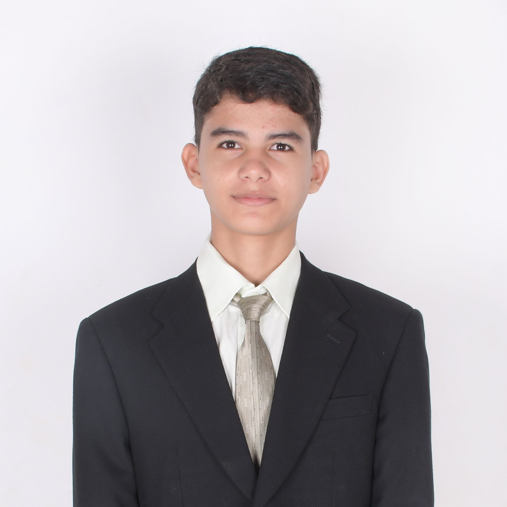

Secretariado
El secretariado es el grupo de personas encargadas de la organización y logística del evento. Su objetivo es asegurar que todo funcione sin problemas y que los participantes tengan una experiencia enriquecedora.
El secretariado de BOLMUN está conformado por estudiantes destacados de la Unidad Educativa Christa Mc Auliffe. Seleccionados por su compromiso, liderazgo y capacidad organizativa. Este equipo desempeña un papel fundamental en el éxito del evento, siendo responsable tanto de la planificación como de la ejecución de todas las actividades.

Entre sus funciones se incluyen la gestión de inscripciones, la organización de conferencias y talleres, la supervisión de actividades sociales, así como la logística general del evento. Además, coordinan el uso de recursos materiales y tecnológicos, mantienen la comunicación entre las delegaciones y se aseguran de que cada detalle funcione correctamente antes, durante y después de la simulación. Su trabajo refleja no solo profesionalismo, sino también una profunda pasión por la diplomacia, el trabajo en equipo y el desarrollo académico.
Conoce al secretariado:
Secretario General:
Mateo Fuentes Yuja

El Secretario General es la máxima autoridad del modelo y quien lidera la planificación y ejecución general del evento. Supervisa todos los equipos, coordina las reuniones estratégicas y representa oficialmente al modelo ante instituciones externas. Su liderazgo garantiza la calidad académica, organizativa y diplomática del evento.
Sub-Secretaria General:
Crhistiany Oliveira Kishimoto

El Subsecretario General actúa como el principal apoyo del Secretario General. Supervisa directamente a los demás secretarios y asegura el cumplimiento de cada una de las áreas. En caso de ausencia del Secretario General, asume sus funciones y mantiene la cohesión y el ritmo operativo del modelo.
Secretario de Protocolo:
Randy Aramil Roca Ortiz

Es el responsable de garantizar que se cumplan todas las normas de etiqueta, comportamiento y formalidad durante el evento. Organiza las ceremonias oficiales y vela por el respeto a las formas diplomáticas propias del entorno de las Naciones Unidas, cuidando cada detalle ceremonial y simbólico.
Secretario de Relaciones Públicas:
Carlos Yver Justiniano Mariscal

Encargado de construir y fortalecer los vínculos entre el modelo y su entorno externo. Gestiona la comunicación institucional con delegaciones, entidades educativas, organizaciones aliadas y autoridades, promoviendo una imagen positiva y profesional del evento.
Secretaria de Marketing y Prensa:
Maite Roca Ruiz

Lidera la imagen visual y comunicacional del modelo. Desarrolla campañas en redes sociales, produce material gráfico y audiovisual, y gestiona la cobertura periodística del evento. Su trabajo es clave para asegurar una presencia mediática dinámica, coherente y atractiva.
Secretario de Delegados:
Daniel Velarde Guiteras
Es el encargado de coordinar todo lo relacionado con la participación de los delegados. Administra el proceso de inscripciones, la asignación de países y comités, y brinda acompañamiento antes y durante el evento. Su labor garantiza una experiencia clara, organizada y enriquecedora para los participantes.
Secretaria de Mesas
Ana Lucía López Hurtado:

Supervisa y apoya a los presidentes de comité. Garantiza el correcto desarrollo del debate parlamentario en cada comisión y proporciona las herramientas y asistencia necesarias para que las mesas funcionen con orden, claridad y apego al reglamento.
Secretario de Supervisión:
Jorge Rivero Ascimani

Es el encargado de monitorear el desempeño general del secretariado, asegurando que cada área cumpla eficazmente con sus funciones. Su labor implica supervisar los procesos internos, identificar posibles dificultades y brindar apoyo estratégico para garantizar que las tareas se desarrollen de manera organizada y dentro de los plazos establecidos.
Secretaria de Logística:
Mara Yáñez Diederich

Responsable de la organización operativa del modelo. Planifica y ejecuta la distribución de espacios, recursos técnicos, materiales y tiempos. Asegura que cada comisión y actividad cuente con lo necesario para desarrollarse sin contratiempos.
MENCIÓN ESPECIAL
Como mención especial podemos destacar la participación actividad y liderativa del Director/Principal Organizador de todo este evento que usa el módelo de las Naciones Unidad como base, que recibe el nombre de "BOLMUN CHRISTA" en su segunda edición en la gestión 2025
Director del Bolmun:
Ing. Raul Suarez Loras
Ha desempeñado un papel fundamental como máximo responsable en la organización y conducción de esta actividad extracurricular, liderándola con compromiso y visión tanto en su primera como en su segunda edición. Su labor ha sido clave en la dirección integral del evento, asumiendo la responsabilidad de seleccionar cuidadosamente al secretariado, tomando en cuenta las cualidades, aptitudes y competencias de cada integrante.